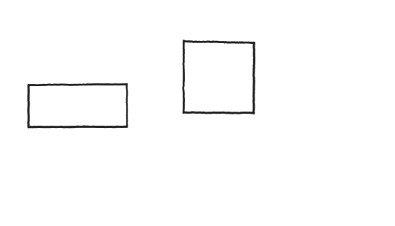
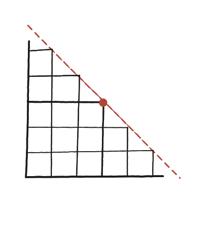

Demostra que, entre tots els rectangles de perímetre fix, el quadrat és el que té l'àrea més gran.

Demostrar, no descobrir
L'enunciat ja dona la resposta: el quadrat. La feina no és endevinar-la —és construir un argument que la faci certa per a tots els rectangles possibles amb aquell perímetre, no només per als que es puguin dibuixar i comparar un per un.
Reduir dues variables a una
Amb perímetre fix P, triar l'amplada x ja determina l'alçada: 2x+2y=P, per tant y=P/2−x. Anomenant s=P/2 (la meitat del perímetre), l'alçada queda y=s−x. Tot el problema depèn ara d'una sola lletra, x.

L'àrea en funció d'una sola variable
L'àrea és àrea(x) = x·y = x(s−x). Es tracta de trobar per a quin valor de x aquesta expressió és més gran, sense necessitat de calcular-ne la derivada: n'hi ha prou amb un truc purament algebraic.
Completar el quadrat
x(s−x) es pot reescriure com s²/4 − (x−s/2)² —es pot comprovar desenvolupant el quadrat de la dreta i simplificant. El primer terme, s²/4, és una constant que no depèn de x. El segon terme, (x−s/2)², és un quadrat: mai pot ser negatiu, i val exactament zero només quan x=s/2. Per tant, l'expressió sencera —l'àrea— és més gran precisament quan es resta el mínim possible, és a dir, quan (x−s/2)²=0, és a dir, x=s/2.
Per què x=s/2 vol dir quadrat
Amb x=s/2, l'alçada surt y=s−x=s−s/2=s/2: igual que l'amplada. Un rectangle amb amplada i alçada iguals és, per definició, un quadrat. Com que qualsevol altre valor de x fa que (x−s/2)² sigui estrictament positiu i, per tant, resti més de l'àrea, el quadrat és l'únic rectangle que arriba al màxim.
El mateix truc, girat: mínim perímetre a àrea fixa
La pregunta es pot girar: de tots els rectangles amb la mateixa àrea A, quin té el perímetre més petit? Amb y=A/x, el perímetre és P(x)=2x+2A/x. Aquí no cal completar cap quadrat nou: la desigualtat entre la mitjana aritmètica i la mitjana geomètrica (per a dos nombres positius a, b: a+b ≥ 2√(ab), amb igualtat només si a=b) aplicada a a=2x i b=2A/x dona directament 2x+2A/x ≥ 2√(4A) = 4√A, amb igualtat exactament quan 2x=2A/x, és a dir x²=A, x=√A —de nou, un quadrat. La resposta a totes dues preguntes —àrea màxima a perímetre fix, perímetre mínim a àrea fixa— és la mateixa figura.
El quadrat (x=s/2, amb s=P/2) té sempre l'àrea més gran entre tots els rectangles de perímetre P fix. Surt d'escriure l'àrea com x(s−x)=s²/4−(x−s/2)², on el segon terme és un quadrat que mai pot ser negatiu i que només val zero quan x=s/2 —precisament quan el rectangle és un quadrat. La pregunta girada (mínim perímetre a àrea fixa) té la mateixa resposta, per la desigualtat entre mitjanes aritmètica i geomètrica.
Comprovació
P=24 (s=12): àrees 1×11=11, 3×9=27, 5×7=35, 6×6=36 —creixent fins al quadrat. I la fórmula 36−(x−6)² dona: amb x=1, 36−25=11 ✓; amb x=5, 36−1=35 ✓; amb x=6, 36−0=36 ✓, el màxim.